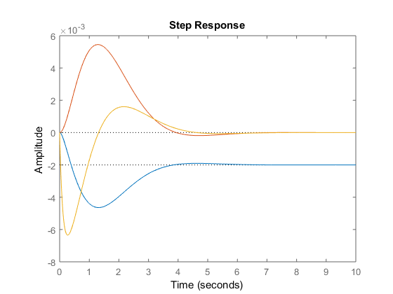

Contents
clear all; close all; figure(1); figure(2); figure(3); % Parameters that are used for the Whipple bicycle model. The model is % based on the linearized 4th order model and analysis of eigenvalues % from IEEE CSM (25:4) August 2005 pp 26-47 % Basic data is given by 26 parameters g = 9.81; % Acceleration of gravity [m/s^2] b = 1.00; % Wheel base [m] c = 0.08; % Trail [m] Rrw = 0.35; Rfw = 0.35; % Wheel radii lambda = pi*70/180; % Head angle [radians] % Rear frame mass [kg], center of mass [m], and inertia tensor [kgm^2] mrf=12;xrf=0.439;zrf=0.579; Jxxrf=0.475656;Jxzrf=0.273996;Jyyrf=1.033092;Jzzrf=0.527436; mrf=87;xrf=0.491586;zrf=1.028138; Jxxrf=3.283666;Jxzrf=0.602765;Jyyrf=3.8795952;Jzzrf=0.565929; % Front frame mass [kg], center of mass [m], and inertia tensor [kgm^2] mff=2;xff=0.866;zff=0.676; Jxxff=0.08;Jxzff=-0.02;Jyyff=0.07;Jzzff=0.02; % Rear wheel mass [kg], center of mass [m], and inertia tensor [kgm^2] mrw=1.5;Jxxrw=0.07;Jyyrw=0.14; % Front wheel mass [kg], center of mass [m], and inertia tensor [kgm^2] mfw=1.5;Jxxfw=0.07;Jyyfw=0.14; % Auxiliary variables xrw=0;zrw=Rrw;xfw=b;zfw=Rfw; Jzzrw=Jxxrw;Jzzfw=Jxxfw; mt=mrf+mrw+mff+mfw; xt=(mrf*xrf+mrw*xrw+mff*xff+mfw*xfw)/mt; zt=(mrf*zrf+mrw*zrw+mff*zff+mfw*zfw)/mt; Jxxt=Jxxrf+mrf*zrf^2+Jxxrw+mrw*zrw^2+Jxxff+mff*zff^2+Jxxfw+mfw*zfw^2; Jxzt=Jxzrf+mrf*xrf*zrf+mrw*xrw*zrw+Jxzff+mff*xff*zff+mfw*xfw*zfw; Jzzt=Jzzrf+mrf*xrf^2+Jzzrw+mrw*xrw^2+Jzzff+mff*xff^2+Jzzfw+mfw*xfw^2; mf=mff+mfw; xf=(mff*xff+mfw*xfw)/mf;zf=(mff*zff+mfw*zfw)/mf; Jxxf=Jxxff+mff*(zff-zf)^2+Jxxfw+mfw*(zfw-zf)^2; Jxzf=Jxzff+mff*(xff-xf)*(zff-zf)+mfw*(xfw-xf)*(zfw-zf); Jzzf=Jzzff+mff*(xff-xf)^2+Jzzfw+mfw*(xfw-xf)^2; d=(xf-b-c)*sin(lambda)+zf*cos(lambda); Fll=mf*d^2+Jxxf*cos(lambda)^2+2*Jxzf*sin(lambda)*cos(lambda)+Jzzf*sin(lambda)^2; Flx=mf*d*zf+Jxxf*cos(lambda)+Jxzf*sin(lambda); Flz=mf*d*xf+Jxzf*cos(lambda)+Jzzf*sin(lambda); gamma=c*sin(lambda)/b; Sr=Jyyrw/Rrw;Sf=Jyyfw/Rfw;St=Sr+Sf;Su=mf*d+gamma*mt*xt; % Matrices for linearized fourth order model M=[Jxxt -Flx-gamma*Jxzt;-Flx-gamma*Jxzt Fll+2*gamma*Flz+gamma^2*Jzzt]; K0=[-mt*g*zt g*Su;g*Su -g*Su*cos(lambda)]; K2=[0 -(St+mt*zt)*sin(lambda)/b;0 (Su+Sf*cos(lambda))*sin(lambda)/b]; c12=gamma*St+Sf*sin(lambda)+Jxzt*sin(lambda)/b+gamma*mt*zt; c22=Flz*sin(lambda)/b+gamma*(Su+Jzzt*sin(lambda)/b); C0=[0 -c12;(gamma*St+Sf*sin(lambda)) c22]; one=diag([1 1]);null=zeros(2,2); % Nominal velocity v0=5;

Part A
M th_dd + C v0 th_d + (K0 + K2*v0) th = [0; T]; where th = [gamma; delta] -> angles of bicycle dynamics let x1 = gamma, x2 = gamma_d, x3 = delta, x4 = delta_d thus, x1_d = x2, x2_d = gamma_dd x3_d = x4, x4_d = delta_dd expand matrix equations for 2 eom in terms of state-variables
syms x1 x2 x3 x4 x1_d x2_d x3_d x4_d T real % get coefficents from matrices m1 = M(1,1); m2 = M(1,2); m3=M(2,1); m4=M(2,2); c1 = C0(1,1); c2=C0(1,2); c3=C0(2,1); c4=C0(2,2); K = [K0 + K2*v0^2]; k1 = K(1,1); k2=K(1,2); k3=K(2,1); k4=K(2,2); % form equations of motion using state-variables %x2_d = (-m2/m1)*x4_d - (c1*v0/m1)*x2 - (c2*v0/m1)*x4-(k1/m1)*x1-(k2/m1)*x3; %x4_d = (-m3/m4)*x2_d - (c3*v0/m4)*x2 - (c4*v0/m4)*x4-(k3/m4)*x1 - (k4/m4)*x3 + T/m4; % rearrange and substitute expression for x2_d into eom of x4_d; eom2 x2_d_eqn = (-m2/m1)*x4_d - (c1*v0/m1)*x2 - (c2*v0/m1)*x4-(k1/m1)*x1-(k2/m1)*x3; eom2 = (-m3/m4)*(x2_d_eqn) - (c3*v0/m4)*x2 - (c4*v0/m4)*x4-(k3/m4)*x1 - (k4/m4)*x3 + (T/m4) - x4_d; % solve for x4_d and x2_d, solution denoted with _s x4_d_s = collect(solve(eom2 == 0, x4_d), [x1; x2; x3; x4; T]); x2_d_s = collect(subs(x2_d_eqn, x4_d, x4_d_s), [x1; x2; x3; x4; T]); x1_d_s = x2; x3_d_s = x4; % construct state-space presentation A = [0 1 0 0;... 0 0 0 0;... 0 0 0 1;... 0 0 0 0]; B = [0; 0; 0; 0]; x = [x1; x2; x3; x4]; % put the coeffients from the solution to x2_d, into A, % and input term into B [C_, T_] = coeffs(vpa(x2_d_s)); for i = 1:size(T_,2) if T_(i) == x1 A(2, 1) = C_(i); elseif T_(i) == x2 A(2, 2) = C_(i); elseif T_(i) == x3 A(2, 3) = C_(i); elseif T_(i) == x4 A(2, 4) = C_(i); elseif T_(i) == T B(2) = C_(i); end end % put the coeffients from x4_d into A, and input term into B [C_, T_] = coeffs(vpa(x4_d_s)); for i = 1:size(T_,2) if T_(i) == x1 A(4, 1) = C_(i); elseif T_(i) == x2 A(4, 2) = C_(i); elseif T_(i) == x3 A(4, 3) = C_(i); elseif T_(i) == x4 A(4, 4) = C_(i); elseif T_(i) == T B(4) = C_(i); end end % view poles of the state-space model, in Hz P_A = eig(A)/2/pi; % findings: v0=5 yields two unstable poles, whilst v0=10 is stable % % % x1_d = 0 1.0000 0 0 * x1 + 0 * T % x2_d 8.7611 -0.6370 23.2100 2.1486 x2 0.2922 % x3_d 0 0 0 1.0000 x3 0 % x4_d -14.9477 -17.2465 29.1529 -12.9089 x4 7.9109
Part B
u = -kx, x_d = Ax + Bu, y = Cx -> x_d = (A-Bk)x poles of closed loop system = eig(A-Bk) desired poles:
Pol = [-2 -10 -1+1i -1-1i]; % required feeback gain, k: k = acker(A, B, Pol); %k = % -1.2565 5.2073 -32.5252 -0.4145 clp = eig(A-B*k);
Part C
% . % u + x /----------\ x % --> B_f ->() ---->| integral |-----> y=Cx ---> y % +| \---------/ | % | | % |<---(A_f = A-Bk)<----| % % with state-feedback and input change in delta % x_d = (A - Bk) [x1 ; x2 ; (x3 + u) ; x4] % x_d = (A - Bk) x + (A-Bk)[0 ; 0 ; 1 ; 0] u % x_d = A_f * x + B_f * u sr = [0;0;1;0]; % selected state for step input A_f = A-B*k; % state matrix with state-feedback B_f = A_f*sr; % construct B matrix C = [0;0;1;0]'; % view only delta on the output D = 0; sys_delta = ss(A_f,B_f,C,D); % apply a step input with size of 0.002, plot response of each state % using the step() function opt = stepDataOptions; opt.StepAmplitude = 0.002; % step amplitude set t = (0:0.005:10); % time set figure(1); hold on; step(sys_delta, t, opt); % response on delta sys_gamma = ss(A_f,B_f,[1,0,0,0],D); % response on gamma sys_gamma_d = ss(A_f,B_f,[0,1,0,0],D); % response on gamma_d step(sys_gamma, t, opt); sys_delta_d = ss(A_f,B_f,[0,0,0,1],D); % response on delta_d step(sys_delta_d, t, opt); hold off; % model using lsim, providing an initial condition for delta = 0.002 % construct a step input, u u = []; for n = 1:size(t,2) if t(n) < 0.2 u(n) = 0; else u(n) = 0.002; end end figure(2); hold on; lsim(sys_delta, u, t, [0;0;0.002;0]); lsim(sys_delta_d, u, t, [0;0;0.002;0]); lsim(sys_gamma, u, t, [0;0;0.002;0]); lsim(sys_gamma_d, u, t, [0;0;0.002;0]); hold off; % without the initial condition, can be seen that the same as % using the step function figure(3); hold on; lsim(sys_delta, u, t, [0;0;0;0]); lsim(sys_delta_d, u, t, [0;0;0;0]); lsim(sys_gamma, u, t, [0;0;0;0]); lsim(sys_gamma_d, u, t, [0;0;0;0]); % lsim(syslqrcl, u, t); hold off;
Part C - 2.0
/---------\
r + u | . |
---> kr -->() ---->| X=Ax+Bu |--> y=Cx ---> y
-| \---------/
| |
|<---- k <----|insert a reference for state (delta)
% x_d = (A-Bk)*x + (kr*B)*r % x_d = A_star*x + B_star*r % where r is a reference step input for delta A_star = A-B*k; C = [0,0,1,0]; %design kr for only delta on output D = 0; kr = -(C*(A-B*k)^-1 *B)^-1;%-(rscale(ss(A-B*k,B,C,D),k) - 1.68); %equal to -0.541 (rscale calculates Kr) B_star = kr*B; % apply a step input with size of 0.002, plot response of each state % using the step() function t = (0:0.005:10); % time set figure(6); hold on; sys_delta = ss(A_star,B_star,C,D); sys_gamma = ss(A_star,B_star,[1,0,0,0],D); % response on gamma sys_gamma_d = ss(A_star,B_star,[0,1,0,0],D); % response on gamma_d sys_delta_d = ss(A_star,B_star,[0,0,0,1],D); % response on delta_d lsim(sys_delta, u, t); lsim(sys_delta_d, u, t); lsim(sys_gamma, u, t); lsim(sys_gamma_d, u, t); % lsim(syslqrcl, u, t); hold off; %Nbar = rscale(ss(A-B*k,B,C,D),k) %aa = ss(A-B*k, -(Nbar-1.68)*B, C, D) %figure(7); lsim(aa, u, t)
Part D
P = [-8 -16 -4+1i -4-1i]; % pole locations for observer L = place(A', C', P)'; % poles at eig(A-LC); % state space model for complete state-feeback and observer A_p = [A -B*k; L*C A-B*k-L*C]; B_p = [B*kr; B*kr]; C_p = [C zeros(size(C))]; C_p_hat = [zeros(size(C)) C]; sys_p = ss(A_star, B_star, C, D); % system which outputs plant delta sys_p_hat = ss(A_p, B_p, C_p, 0); % system which outputs observer delta figure(8); hold on; no_input = zeros(size(t)); % no step input %show response for initial disturbance on plant delta lsim(sys_p, no_input, t, [0, 0, 0.002, 0]); lsim(sys_p_hat, no_input, t, [0, 0, 0.002, 0, zeros(1,4)]); hold off;
Part E
to show the effect of observer poles on replicating the plant Pol is a matrix containing the poles of the state-feedback component of the plant
% make the observer poles a multiple of the plant observes, my multiplying % Pol by an element in co before evaluating L. co = [2, 5, 10, 20]; % For each multiple of Pol, plot the response against the plant for an % initial state offset -> delta by 0.002 for i = 1:4 % outputing delta C = [0,0,1,0]; % place poles of observer at a multiple of Pol L = place(A', C', co(i)*Pol)'; % poles at eig(A-LC); A_p = [A -B*k; L*C A-B*k-L*C]; % observer A B_p = [B*kr; B*kr]; % observer B C_p = [C zeros(size(C))]; % observer C % retrieve the state-space model for an output of delta only if i == 1 sys_delta = ss(A_star, B_star, C, D); % system which outputs plant delta end sys_delta_hat = ss(A_p, B_p, C_p, 0); % system which outputs observer delta % retrieve the state-space model for an output of phi C = [1,0,0,0]; C_p_hat = [ C, zeros(size(C))]; if i == 1 sys_phi = ss(A_star, B_star, C, D); % system which outputs plant delta end sys_phi_hat = ss(A_p, B_p, C_p_hat, 0); % system which outputs observer delta figure(9); hold on; % plot response on phi if i == 1 % plot the plant response, only once lsim(sys_phi, no_input, t, [0, 0, 0.002, 0]); end lsim(sys_phi_hat, no_input, t, [0, 0, 0.002, 0, zeros(1,4)]); hold off; figure(10); hold on; % plot reponse on delta if i == 1 % plot the plant response, only once lsim(sys_delta, no_input, t, [0, 0, 0.002, 0]); end lsim(sys_delta_hat, no_input, t, [0, 0, 0.002, 0, zeros(1,4)]); hold off; end
i = 1;
% outputing delta
C = [0,0,1,0];
% place poles of observer at a multiple of Pol
L = place(A', C', [-15+7.5i -15-7.5i -20+10i -20-10i])'; % poles at eig(A-LC);
A_p = [A -B*k; L*C A-B*k-L*C]; % observer A
B_p = [B*kr; B*kr]; % observer B
C_p = [C zeros(size(C))]; % observer C
% retrieve the state-space model for an output of delta only
if i == 1
sys_delta = ss(A_star, B_star, C, D); % system which outputs plant delta
end
sys_delta_hat = ss(A_p, B_p, C_p, 0); % system which outputs observer delta
% retrieve the state-space model for an output of phi
C = [1,0,0,0];
C_p_hat = [ C, zeros(size(C))];
if i == 1
sys_phi = ss(A_star, B_star, C, D); % system which outputs plant delta
end
sys_phi_hat = ss(A_p, B_p, C_p_hat, 0); % system which outputs observer delta
figure(11); hold on;
% plot response on phi
if i == 1
% plot the plant response, only once
lsim(sys_phi, no_input, t, [0, 0, 0.002, 0]);
end
lsim(sys_phi_hat, no_input, t, [0, 0, 0.002, 0, zeros(1,4)]);
hold off;
figure(11); hold on;
% plot reponse on delta
if i == 1
% plot the plant response, only once
lsim(sys_delta, no_input, t, [0, 0, 0.002, 0]);
end
lsim(sys_delta_hat, no_input, t, [0, 0, 0.002, 0, zeros(1,4)]);
hold off;